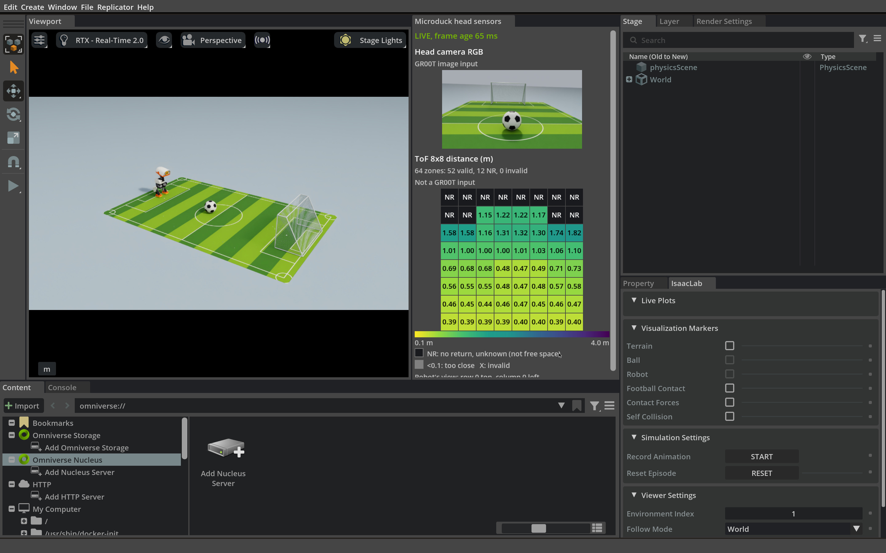

5.3 训练与验证 GR00T 步行射门#
在课程容器中用已准备好的步行射门示范后训练 GR00T 的动作头，理解训练量、抽样与耗时；再用课程提供的检查点在 Isaac Lab 与 Newton 中验证完整射门。
开始之前#
本节有两个动手操作：先体验训练，再验证一个已经训练好的模型。两条命令都在课程容器内运行。
如果你还没有启动容器，先按 1.2 节 构建并启动它，再打开容器内的终端。
如果容器已经在运行，回到之前进入容器的那个终端即可；也可以在宿主机新开一个终端，用
docker exec -it microduck-workshop bash回到同一个容器。训练数据、特征缓存与课程检查点来自 GR00T 课程资料包（容器内路径
course-data/groot-walking），开始本节前请向授课教师领取，并按 1.2 节放好。容器启动时资料包以只读方式挂载；你的训练和验证结果写入outputs/下的新目录，不会改动课程提供的数据和模型。GR00T 的基础模型和 Cosmos-Reason2-2B 处理器从 Hugging Face 下载。先在 nvidia/Cosmos-Reason2-2B 页面按提示申请访问，再在容器内运行一次
/workspace/groot-env/bin/hf auth login登录；下载缓存保存在宿主机的~/.cache/huggingface。
GR00T 训练和带窗口的仿真都会占用大量 GPU 显存，请一次只运行一个。
左右滑动查看完整图示
1课程资料包
训练集与验证集、训练起点检查点和冻结骨干的特征缓存都来自 GR00T 课程资料包，以只读方式挂载，训练不会改动它们。
2动作头训练
训练命令核对缓存后，只更新动作头；输出写入你指定的新目录。体验几分钟后可以 Ctrl+C 停止。
3闭环验证
验证命令启动 GR00T 推理服务，再在 Isaac Lab 与 Newton 中运行步行射门；默认使用课程提供的检查点，完整训练完成后才换成你自己的。
已经准备好的数据#
数据按 5.2 节的原则准备：板载策略（Onboard）在绿色球场上从不同起点完成步行射门，只保留完整成功的回合，并按完整回合与起点划分训练集和验证集，两者没有重叠。
数据集 |
回合 |
样本（帧） |
采样频率 |
大小 |
|---|---|---|---|---|
训练集 |
58 |
13,431 |
12.5 Hz |
约 3.9 GB |
验证集 |
14 |
3,098 |
12.5 Hz |
约 0.9 GB |
每个样本包含 4 张 270 × 480 的 RGB 图像、127 维状态、那句固定的任务指令，以及从这一刻起未来 16 步的 8 维请求标签。一个回合平均约 230 帧，相当于约 18 秒的仿真。
训练配方#
训练从课程提供的初始化检查点出发：它已经针对步行射门任务做过后训练，输入输出的归一化统计只用本次的训练集计算。这次训练在它的基础上继续训练动作头，优化器状态重新建立；它不是从官方基础权重从零开始。
设置 |
取值 |
说明 |
|---|---|---|
训练范围 |
动作头 |
视觉语言骨干冻结；状态与动作编码器、动作解码器、动作序列生成网络和视觉语言特征处理层参与训练，原因见 5.2 节 |
训练步数 |
2000 |
2000 次优化器更新 |
批量大小 |
16 |
每次更新抽取 16 个样本 |
学习率 |
5 × 10⁻⁵ |
前 100 步从很小的值线性升高，之后逐渐降到 0 |
优化器 |
AdamW，新建状态 |
不沿用初始化检查点的优化器状态 |
图像增强与 dropout |
关闭 |
先检验模型能否拟合这个固定场景，不涉及跨场景泛化 |
2000 步大约看了多少数据#
一次更新抽取 \(\htmlData{sym=B_batch}{B}\) 个样本，\(\htmlData{sym=S_steps}{S}\) 次更新一共抽取 \(\htmlData{sym=S_steps}{S}\htmlData{sym=B_batch}{B}\) 个。拿它和训练集大小 \(\htmlData{sym=N_train}{N}\) 相比，就得到一个简单的估算：
变量含义
- \(E\)
- 等效数据遍历次数：总抽样数相当于把训练集完整看了几遍。
- \(S\)
- 优化器更新次数（训练步数）；本节为 2000。
- \(B\)
- 每次更新抽取的训练样本数（批量大小）；本节为 16。
- \(N\)
- 训练集中的样本（帧）总数；本节为 13,431。
也就是说，总抽样量大约相当于把训练集看了 2.38 遍。但这不等于每个样本都恰好被看了 2.38 遍：训练按 5.2 节介绍的阶段加权抽样，原地站立、球前细调和即将出脚这些少见的时刻被抽到的次数更多，大量走路的帧更少；抽样又是随机的，个别样本可能一次也没有被抽到。
要等多久#
阶段 |
DGX Spark 上的耗时 |
在做什么 |
|---|---|---|
核对 |
几分钟 |
核对资料包文件，并抽查 4 个样本的特征缓存 |
优化器更新 |
约 56 分钟 |
2000 次更新，平均约 1.6 秒一次 |
保存检查点 |
另计 |
模型权重约 12.6 GB |
在 DGX Spark 上，完整训练约为 56 分钟的更新，再加上开始时的核对和最后保存检查点的时间。在 32 GB 的 RTX 5090 上，按短时测得的更新间隔粗略估算，2000 次更新约需 100–170 分钟；课程没有在这种 GPU 上跑完完整训练。你不必等它结束：下面的验证默认使用课程提供的检查点。
硬件要求。 训练命令会读取 GPU 显存，自动选择计算做法，配方不变：
显存约 56 GB 以上（例如 DGX Spark）： 按完整批量训练，更新阶段显存峰值约 47 GB。
显存约 30–56 GB（例如 32 GB 的 RTX 5090）： 自动改用低显存做法。计算顺序不同，结果不会与课程检查点逐位相同。
显存不足约 30 GB： 命令会停止并说明原因。
内存与磁盘： 训练进程的内存峰值约 8 GB；输出目录预留约 40 GB，在自己的 GPU 上重算特征缓存还要约 32 GB。
资源与特征缓存
特征缓存。 冻结骨干算出的特征已经随资料包提供（约 32 GB）。训练开始时，命令核对缓存、训练起点和训练集的 SHA-256，再在 GPU 上重算 4 个样本的特征与缓存比对；全部一致才跳过特征计算，否则停止，并在输出目录旁写出逐项差异记录。
其他 GPU 架构。 这份缓存在 DGX Spark 上算出；换一种 GPU 架构时，浮点计算的差异可能让比对不通过。为 RTX 5090（计算能力 12.0）准备的缓存可以向授课教师领取：把
groot-walking-feature-caches/文件夹放在groot-walking/旁边，命令会按 GPU 的计算能力自动选用。重算特征。 加
--recompute-features在自己的 GPU 上重算缓存：DGX Spark 约 88 分钟，RTX 5090 约 54 分钟。计算做法。
--profile full或--profile low-memory可以指定做法。低显存做法把每批 16 个样本拆成 16 次计算、累加梯度后再更新一次参数，逐个参数更新优化器状态，并按需从磁盘读取特征缓存。WSL 2。 文件写在 Windows 磁盘上的一个虚拟磁盘文件里，它随写入增长、不会自动缩小，要确认这个 Windows 盘有足够的剩余空间；保存和重新加载检查点时还会用到几 GB 交换空间。
体验后训练#
在容器终端里运行下面的命令。它使用上面的配方和已经准备好的训练集，把结果写入一个新目录。
python3 scripts/groot_walking.py train --output outputs/groot-walking-train
代码关键参数
资料包。 宿主机的
course-data/groot-walking/（或$MICRODUCK_COURSE_DATA指向的目录），容器内是/workspace/Microduck-Workshop/course-data/groot-walking/（只读）。train读取的文件。 固定读取资料包里的initialization/（训练起点检查点）、datasets/train-history127/与datasets/validation-history127/、sampling.json和backbone-cache/里的特征缓存，不需要你写这些路径；资料包另外提供了与你的 GPU 架构对应的特征缓存时，命令会自动选用它。基础模型。 检查点配置记录的 GR00T 基础模型
nvidia/GR00T-N1.7-3B（固定版本）和处理器nvidia/Cosmos-Reason2-2B从 Hugging Face 缓存读取：宿主机~/.cache/huggingface，容器内/root/.cache/huggingface。可选参数。
--recompute-features在你的 GPU 上重算特征缓存；--profile full或--profile low-memory指定计算做法。输出。 训练结果写入
--output指定的新目录。
日志先显示缓存核对的结果，随后开始按 step 报告损失和学习率，这就是优化器更新。课程记录中，第 1 步的损失约 0.095，到第 2000 步降到约 0.016；单步损失有起伏，看趋势即可。训练损失下降只说明模型拟合了示范，不说明它能完成射门。
看过最初几十步之后，就可以按 Ctrl+C 停止。Ctrl+C 只结束这条训练命令，容器和终端仍然保留，可以直接继续下一个操作。中途停止不会得到可用的检查点；下面的验证默认使用课程提供的检查点，不受影响。如果你之后有时间完整训练，用一个新的输出目录重新运行，等它完成 2000 步并保存后再验证。
验证课程提供的检查点#
下面的命令默认加载课程资料包中已经训练好的 8 维步行射门检查点：它是按上面配方完整训练 2000 步得到的模型，不是你刚才中断的那次训练。它会启动 GR00T 推理服务，打开 Isaac Sim 窗口，在 Newton 物理中从固定的 5 个起点依次运行完整射门。
python3 scripts/groot_walking.py validate --output outputs/groot-walking-validate
代码关键参数
检查点。 不写
--checkpoint时，GR00T 推理服务加载资料包里的course-data/groot-walking/checkpoint/（容器内/workspace/Microduck-Workshop/course-data/groot-walking/checkpoint/），基础模型同样来自 Hugging Face 缓存；写了--checkpoint就只加载你指定的那个检查点。验证场景。 由
lab/groot_walking/student/walking_student_scene.py启动，GR00T 推理服务的地址通过它的--walking-policy-server参数传入。底层行走策略。 由场景的
--model参数加载/workspace/state/student-course/simulation/core/models/reference/velstand.onnx，它在容器启动时由仓库的models/walk.onnx复制而来，两者字节相同。机器人模型。
--robot-usd的默认值/workspace/state/student-course/simulation/core/visuals/assets/microduck_white_orange.usda，来自仓库lab/runtime/simulation/core/visuals/assets/。输出。 这些场景参数都由
groot_walking.py validate自动填写；每个回合的结果写入--output指定的新目录。


容器中的验证窗口，截于 GR00T 接管后。右侧 RGB 来自头部相机，ToF 仅供观察；截图不代表射门成功，结局以回合记录为准。
窗口还会同步显示头部 RGB 图像和 8×8 ToF 面板：RGB 图像是 GR00T 的输入来源，ToF 只作观察，不是本课程 GR00T 的输入。
每次推理时仿真都会暂停，等 GR00T 返回请求，所以窗口里出现短暂停顿是预期现象（完整时序见 5.2 节）；这些停顿不能用来判断真机上的实时表现。加上头部相机每秒 15 帧都要用 RTX 渲染并保存，在 DGX Spark 上验证的速度约为真实速度的 0.24 倍。
运行结束后，先看终端打印的 Complete walking shots 汇总和每个回合的一行结果。逐回合记录保存在输出目录的 attempts.json 中（例如 outputs/groot-walking-validate/attempts.json）：每条记录的 score 里，passed 表示完整成功，contact 表示触球，goal 表示进球，fall 表示跌倒，terminal 记录回合结束的原因。阅读时分清几种结局：
结局 |
含义 |
|---|---|
完整成功 |
整球进门、没有摔倒、结束前连续站稳 |
触球未进 |
踢到了球，但球没有进门 |
未触球 |
在时间上限（60 秒仿真）内没有碰到球 |
摔倒 |
任何时刻摔倒都不算成功 |
课程检查点的验证结果。 同一个检查点在这 5 个起点上的记录是：0 次进球，2 次触球未进，3 次在 60 秒内没有碰到球，没有摔倒。第 4、5 个回合在踢球观察时段结束时正常结束（任务时间约 16 秒和 27 秒）。这组记录的头部相机每帧渲染 4 遍；默认命令只渲染 1 遍，图像细节略有不同，结果可能不同。想按同样条件运行，在命令前加 MICRODUCK_GROOT_RENDER_SUBFRAMES=4。
流程能跑通，也能走到球前出脚，但这 5 次都没有完成射门。5 个回合太少，而且这些起点在训练和调试中用过，不能据此判断泛化。下一步应先分析失败，再用更多未参与训练和调参的起点评测，并保留所有失败。
如果你完整训练了自己的模型，在上面的命令后加上 --checkpoint outputs/groot-walking-train/checkpoints/002000/pretrained_model，并换一个新的 --output 目录，就能用同样的起点比较两个模型。
检查理解
验证中 Microduck 每隔一会儿就停顿一下，这说明 GR00T 太慢、不能用吗？
查看解析
这只说明评估是同步的：仿真在等待推理时暂停。它展示了推理需要时间，但真机上的表现要在异步推理、请求缓冲和实际感知与网络延迟下实测判断；仿真里的停顿或流畅程度，都不能直接说明真机会怎样。